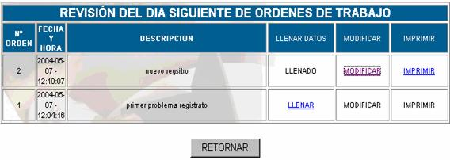
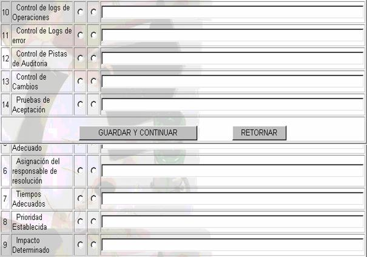

PRODUCCIÓN
Comprende todas las actividades relacionadas con la producción que se deben realizar, una vez solucionado el problema, orientadas a validar la adecuación y suficiencia de los pasos seguidos en las diferentes etapas del proceso. Es una función de control orientada a identificar falsas alarmas, rutinas fraudulentas, sobreprecios, negligencia, insuficiencia en la solución, etc. Esta revisión, debe ser cumplida por el Administrador de la Seguridad de la Información, para asegurar una revisión independiente. Los datos que se ven se muestran en la siguiente pantalla:

Donde:
Nro; número de orden de mesa.
Fecha y Hora; fecha y hora en la que se realiza la revisión.
Descripción; en esta parte se ve cual fue el tipo de revisión que se hizo.
Llenar Datos; si es que la información acerca de la revisión que se esta realizando aun no fue llenada, en este campo aparecerá la opción
LLENAR puede hacer click sobre esta opción y verá la siguiente pantalla:
Nº;
Número correlativo que nos indica con cuantas opciones de descripción contamos.Descripción;
Nos indica cual es la revisión que se esta realizando,, pudiendo ser esta control de número de registro, correctitud en el llenado de campos, comunicación al propietario del recurso, problema recurrente, diagnóstico adecuado, asignación del responsable de resolución, tiempos adecuados, prioridad establecida, impacto determinado, control de logs de operaciones, control de logs de error, control de pistas de auditoría, control de cambios, pruebas de aceptación, todos estos campos ya están en el sistema pero si Usted desea agregar otro puede hacerlo después de hacer click sobre el boton guardar y continuarSI/NO;
En caso de que la opción de la descripción se esta llevando a cabo escoja la opción SI, caso contrario escoja NO.Observaciones;
si es que existe alguna observación en el momento de la revisión, se las coloca.Una vez llenados estos campos presione sobre el botón GUARDAR y CONTINUAR y se mostrará siguiente pantalla.
En la cual usted puede agregar alguna descripción si es que esto fuera necesario y a continuación verá los siguientes campos:
Observaciones;
si es que existe alguna observación general en el momento de realizar la revisión, se las coloca.Responsable de revisión;
en este campo se especifica el nombre del responsable que realizó la revisión.Fecha;
en este campo se especifica la fecha en la que el responsable de revisión realizó dicha revisión.Responsable de Auditoria;
en este campo se especifica el nombre del responsable que realizó la auditoria.Fecha;
en este campo se especifica la fecha en la que el responsable de auditoria realizó dicha auditoriaModificar; haciendo click en esta opción usted podrá ver los datos llenados en la revisión y cambiarlo de acuerdo a sus requerimientos
Imprimir; haciendo click en esta opción usted podrá obtener un reporte de los datos de la revisión..